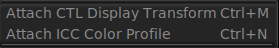

The Monitor Menu

The monitor menu allows attaching a CTL Output Display Transform to complete the ACES workflow. The Output Display Transform emulates the device the image is going to be seen in. It is usually some monitor but it can be a film emulation transform.
The monitor menu also supports adding an ICC Monitor Profile. In that case, the monitor profile is to accept an image in XYZ as input and the output can be anything like sRGB. With the advent of ACES CTL, this option is deprecated.